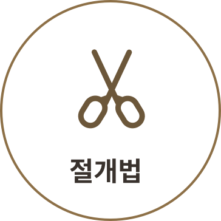

-

수술 시간
30~40 분
-

마취방법
수면/국소마취
-

실밥제거
3~4일 후
쌍커풀 수술이란?
쌍커풀 수술은 성형외과 수술 중 가장 흔한 것으로 알려져 있습니다.
그래서 쌍커풀 수술이 마치쉬운 수술처럼 인식되는 경우가 있습니다.
그러나 눈은 사람의 인상을 결정하는 매우 중요한 부분이며 섬세한 구조물로
이루어져 있기 떄문에 쌍커풀 수술은 실제로는 세심한 주위를 필요로 하는
수술이며경험과 노하우가 풍부한 성형외과 전문의에게 시술 받아야 합니다.
BEFORE

AFTER

절개
쌍커풀
절개를 통해 피부, 근육 조정 및 지방을 일부 제거한 후 상안검거근과 피부를 봉합하여 고정하는 수술 방법
처진 피부는 측정 후 잘라내고 지방은 일부 제거할 수 있고 눈꺼풀의 근육이 두껍게 발달되어 있다면
날씬한 쌍커플 라인을 만들어 교정할
수 있습니다.
-

1
수술전
-
2
절개선
-

3
지방제거
-
4
상안검거근과 진피 봉합
-
5
봉합
-

6
수술 후
절개 쌍커풀 핵심포인트
시원하고 또렷한 눈매를 위해 연세자연미는
자세한 상담과 진단을 통해 가장 효과적인
방법으로 수술을 진행합니다.


눈 형태에 따른 맞춤 수술
모든 눈 타입에 적용이 가능하여
만족도를 높여 드리고 있습니다.

흉터 DOWN
다년간의 경험으로 숙련된 의료진이
섬세하게 집도하므로
흉터가 거의 남지 않습니다.
나에게 맞는 수술법은?
쌍커풀
수술법 방법
VS

- 수술 후 붓기가 적어 일상으로 복귀가 빠르며,
흉터가 거의 남지 않아
자연스러운 쌍꺼풀을 만들 수 있음 - 특징
- 피부가 두껍고 지방이 많을 경우,
눈늘어진 피부의절개가 필요한 경우,
확실하고 커다란 쌍커풀을 원하는 경우에
적당한 방법
-
- 30분
- 수술시간
-
- 60분
-
- 아주 적음
- 수술 후 부종
-
- 보통
-
- 보이지 않음
- 수술 자국
-
- 드믐
-
- 눈꺼풀의 상태에 따라 다르나 비교적 적음
- 쌍커풀의 소실
-
- 거의 없음